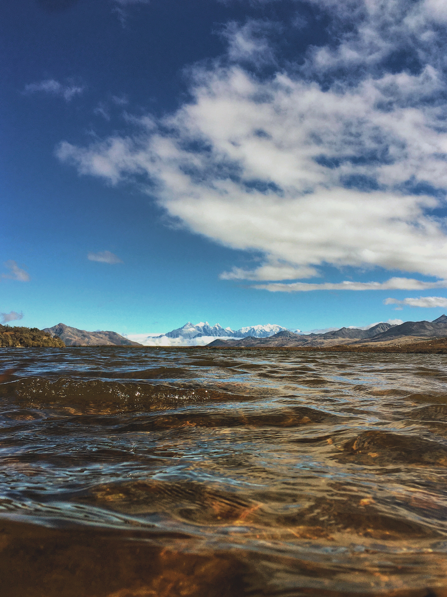

Recent Articles:
-
{% for item in site.posts %}
{% if item.recent %}
- - {{item.title}} {% endif %} {% endfor%}
Recent Work:
-
{% for item in site.portfolios %}
{% if item.recent %}
-
{{ item.project_name }}
{{ item.short_description }}
{% endif %}
{% endfor%}
Recent photo:

Sichuan, honghaizi.
Recent trip to western Sichuan. More photos